전기산업기사 (2003-08-31 기출문제)
1과목: 전기자기학
1. 전위함수 V=2xy2 + x2yz2[V]일 때 점(1, 0, 0)[m]의 공간 전하밀도는 몇 [C/m3]인가?
- -2εo
- -4εo
- -6εo
- -8εo
(정답률: 41%)
2. 평등자계내에 수직으로 돌입한 전자의 궤적은?
- 원운동을 하는데 반지름은 자계의 세기에 비례한다.
- 구면위에서 회전하고 반지름은 자계의 세기에 비례한다.
- 원운동을 하고 반지름은 전자의 처음 속도에 반비례한다.
- 원운동을 하고 반지름은 자계의 세기에 반비례한다.
(정답률: 45%)

3. 콘덴서에 비유전율 εr 인 유전체로 채워져 있을 때의 정전용량 C와 공기로 채워져 있을 때의 정전용량 C0와의 비 C/C0는?
- εr
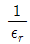
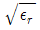
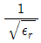
(정답률: 52%)
4. 진공 중에서 4π[Wb]의 자하(磁荷)로부터 발산되는 총자력선의 수는?
- 4π
- 107
- 4π×107
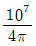
(정답률: 48%)
5. 전류에 의한 자계의 방향을 결정하는 법칙은?
- 렌즈의 법칙
- 플레밍의 오른손법칙
- 플레밍의 왼손법칙
- 암페어의 오른손법칙
(정답률: 59%)
6. 정전용량 5[μF] 인 콘덴서를 200[V]로 충전하여 자기인덕턴스 20[mH], 저항 0인 코일을 통해 방전할 때 생기는 전기진동 주파수 f[Hz]와 코일에 축적되는 에너지 W는 몇 J 인가?
- f=500, W=0.1
- f=50, W=1
- f=500, W=1
- f=5000, W=0.1
(정답률: 67%)
7. 단면적 S[m2], 자로의 길이 ℓ[m], 투자율 μ[H/m] 의 환상 철심에 1[m]당 N회의 코일을 균등하게 감았을 때 자기인덕턴스는 몇 [H] 인가?(오류 신고가 접수된 문제입니다. 반드시 정답과 해설을 확인하시기 바랍니다.)
- μN2ℓS
- μNℓS
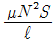
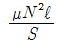
(정답률: 40%)
8. 자속밀도 B[Wb/m2]내에서 전류 I[A]가 흐르는 도선이 받는 힘 F[N]을 옳게 표현한 것은?
- F = IdL×B
- F = IdL·B
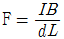
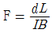
(정답률: 57%)
9. 1권의 코일에 5[Wb]의 자속이 쇄교하고 있을 때 t= 1/100초 사이에 이 자속을 0으로 했다면 이 때 코일에 유도되는 기전력은 몇 [V] 이겠는가?(오류 신고가 접수된 문제입니다. 반드시 정답과 해설을 확인하시기 바랍니다.)
- 100
- 200
- 250
- 700
(정답률: 35%)
10. 무한장 원주형 도체에 전류 I가 표면에만 흐른다면 원주 내부의 자계의 세기는 몇 [AT/m]인가? (단, r[m]는 원주의 반지름이고, N은 권선수이다.)
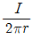
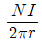
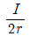
- 0
(정답률: 54%)
11. 두 종류의 금속으로 된 회로에 전류를 통하면 각 접속점에서 열의 흡수 또는 발생이 일어나는 것을 무슨 효과라 하는가?
- Thomson 효과
- Seebeck 효과
- Volta 효과
- Peltier 효과
(정답률: 60%)
12. 거리 r에 반비례하는 전계의 세기를 나타내는 대전체는?
- 점전하
- 구전하
- 전기쌍극자
- 선전하
(정답률: 66%)
13. 원점에 점전하 Q[C]이 있을 때 원점을 제외한 모든 점에서 ▽·D의 값은?
- ∞
- 0
- 1
- εo
(정답률: 74%)
14. 무한장 직선도체에 선전하밀도 λ[C/m] 의 전하가 분포되어 있는 경우 직선도체를 축으로 하는 반지름 r의 원통 면상의 전계는 몇 [V/m]인가?
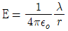
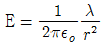
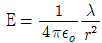
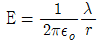
(정답률: 51%)
15. 100[kW]의 전력이 안테나에서 사방으로 균일하게 방사될 때 안테나에서 1[km]의 거리에 있는 전계의 실효값은 몇 [V/m] 인가?
- 1.73
- 2.45
- 3.68
- 6.21
(정답률: 58%)
16. 공기콘덴서를 100[V]로 충전한 다음, 극간에 유전체를 넣어 용량을 10배로 하였다면 정전에너지는 몇 배로 되는가?
- 1/10
- 1/100
- 10
- 100
(정답률: 30%)
17. 그림과 같이 권수 1이고 반지름 a[m]인 원형전류 I[A]가 만드는 중심의 자계의 세기는 몇 [AT/m]인가?
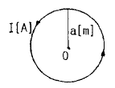
- I/a
- I/2a
- I/3a
- I/4a
(정답률: 74%)
18. 면적 S[m2], 간격 d[m]인 평행판콘덴서에 그림과 같이 두께 d1, d2[m]이며 유전율 ε1, ε2[F/m] 인 두 유전체를 극판간에 평행으로 채웠을 때 정전용량은 얼마인가?
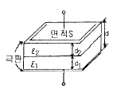
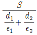
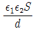
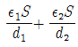
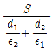
(정답률: 56%)
19. 진공 중에 서로 떨어져 있는 두 도체 A, B가 있을 때 도체 A에만 1[C]의 전하를 주었더니 도체 A와 B의 전위가 3V, 2V 이었다. 지금 도체 A, B에 각각 2C과 1C의 전하를 주면 도체 A의 전위는 몇 V 인가?
- 6
- 7
- 8
- 9
(정답률: 44%)
20. 원점 주위의 전류밀도가
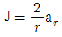
[A/m2]의 분포를 가질 때 반지름 5[cm]의 구면을 지나는 전 전류는 몇 [A] 인가?- 0.1π
- 0.2π
- 0.3π
- 0.4π
(정답률: 46%)
2과목: 전력공학
21. 중거리 송전선로의 T형 회로에서 소전단전류 Is는? (단, Z, Y는 선로의 직렬임피던스와 병렬어드미턴스이고, Er은 수전단전압, Ir은 수전단전류이다.)
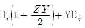
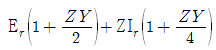
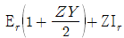
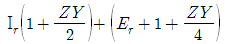
(정답률: 36%)
22. 어떤 콘덴서 3개를 선간전압 3300[V], 주파수60[Hz]의 선로에 △로 접속하여 60[kVA]가 되도록 하려면 콘덴서 1개의 정전용량은 dir [㎌]인가?
- 0.5
- 5
- 50
- 500
(정답률: 37%)
23. 송전계통에서 콘덴서와 리액터를 직렬로 연결하여 제거시키는 고조파는?
- 제3고조파
- 제5고조파
- 제7고조파
- 제9고조파
(정답률: 74%)
24. 주상변압기에 시설하는 캐치홀더는 어느 부분에 직렬로 삽입하는가?
- 1차측 양 선
- 1차측 1선
- 2차측 비접지측 선
- 2차측 접지된 선
(정답률: 45%)
25. 송전선로의 안정도 향상 대책으로 틀린 것은?
- 고속도 재폐로방식을 채용한다.
- 게통의 직렬 리액턴스를 증가한다.
- 중간조상방식을 채용한다.
- 선로의 평행 회선수를 늘리거나 복도체 내지는 다도체 방식을 사용한다.
(정답률: 65%)
26. 3000[kW], 역률 80[%](뒤짐)의 부하에 전력을 공급하는 있는 변전소에 전력용콘덴서를 설치하여 변전소에서의 역률을 90[%]로 향상시키는데 필요한 전력용콘덴서의 용량은 약 몇 [kVA] 인가?
- 600
- 700
- 800
- 900
(정답률: 52%)
27. 우리나라에서 현재 사용되고 있는 송전전압에 해당되는 것은?
- 150[kV]
- 220[kV]
- 345[kV]
- 500[kV]
(정답률: 74%)
28. 다음의 감속재 중 감속비가 가장 큰 것은?
- 경수
- 중수
- 흑연
- 헬륨
(정답률: 27%)
29. 차단기의 개폐에 의한 이상전압은 송전선의 Y 전압의 몇 배 정도가 최고인가?
- 2
- 3
- 6
- 10
(정답률: 32%)
30. 유효낙차 400[m]의 수력발전소에서 펠턴수차의 노즐에서 분출하는 물의 속도를 이론값의 0.95배로 한다면 물의 분출속도는 약 몇 [m/s]인가?
- 42.3
- 59.5
- 62.6
- 84.1
(정답률: 26%)
31. 저압 네트워크 배전방식의 장점이 아닌 것은?
- 전압강하가 적다.
- 인축의 접지사고가 거의 없다.
- 무정전공급의 신뢰도가 높다.
- 부하의 증가에 대한 적응성이 크다.
(정답률: 37%)
32. 중성점 접지방식에서 직접 접지방식에 대한 설명으로 틀린 것은?
- 보호계전기의 동작이 확실하여 신뢰도가 높다.
- 변압기의 저감절연이 가능하다.
- 과도안정도가 대단히 높다.
- 단선고장식의 이상전압이 최저이다.
(정답률: 45%)
33. 단상 2선식 배전선로에서 대지정전용량을 Cs, 선간정전 용량을 Cm 이라 할 때 작용정전용량은?
- Cs+Cm
- Cs+2Cm
- Cs+3Cm
- 2Cs+Cm
(정답률: 64%)
34. 화력 발전소에서 가장 큰 손실은 주로 어떤 손실인가?
- 연돌 배출가스 손실
- 복수기의 방열손
- 소내용 동력
- 터빈 및 발전기의 손실
(정답률: 57%)
35. 뇌해방지와 관계가 없는 것은?
- 댐퍼
- 소호각
- 가공지선
- 매설지선
(정답률: 76%)
36. 피뢰기의 구조는?
- 특성요소와 콘덴서
- 특성요소와 소호리액터
- 소호리액터와 콘덴서
- 특성요소와 직렬갭.
(정답률: 63%)
37. 고장점에서 구한 전 임피던스를 Z, 고장점의 성형전압을 E라 하면 단락전류는?
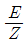
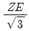
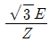
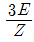
(정답률: 51%)
38. 배전전압을
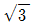
배로 하면 동일한 전력손실률로 보낼 수 있는 전력은 몇 배가 되는가?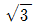
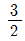
- 3
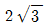
(정답률: 64%)
39. 연간 전력량 E[kWh], 연간 최대전력 W[kW]인 경우의 연부하율은?
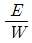
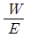
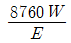
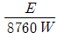
(정답률: 42%)
40. 충전된 콘덴서의 에너지에 의해 트립되는 방식으로 정류기, 콘덴서 등으로 구성되어 있는 차단기의 트립방식은?
- 콘덴서 트립방식
- 직류전압 트립방식
- 과전류 트립방식
- 부족전압 트립방식
(정답률: 72%)
3과목: 전기기기
41. 3상 직권 정류자 전동기의 중간 변압기의 사용 목적이 아닌 것은?
- 실효 권수비의 조정
- 정류 전압의 조정
- 경부하 때 속도의 이상 상승 방지
- 직권 특성을 얻기 위하여
(정답률: 50%)
42. 15[kW] 3상 유도전동기의 기계손이 350[W], 전부하 시의 슬립이 3[%]이다. 전부하시의 2차 동손은?
- 약 395[W]
- 약 411[W]
- 약 475[W]
- 약 524[W]
(정답률: 47%)
43. 6극 직류발전기의 정류자 편수가 132, 단자전압이 220[V], 직렬도체수가 132개 이고 중권이다. 정류자 편간 전압 [V] 은?
- 10
- 20
- 30
- 40
(정답률: 46%)
44. 변압기의 전일효율을 최대로 하기 위한 조건은?
- 전부하 시간이 갈수록 철손을 적게한다.
- 전부하 시간과 관계없이 전부하철손과 동손을 같게 한다.
- 전부하 시간이 짧을수록 철손을 크게한다.
- 전부하 시간이 짧을수록 무부하 손을 적게한다.
(정답률: 30%)
45. 3상 동기 발전기에서 매극 매상의 슬롯수가 3이면 기본파에 대한 분포권 계수는 어떻게 되는가?
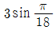
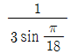
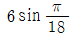
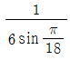
(정답률: 64%)
46. 비례 추이가 되지 않는 것은?
- 토크
- 전류
- 저항
- 역률
(정답률: 25%)
47. 동기발전기에서 전기자전류를 I, 유기기전력과 전기자전류와의 위상각을 θ 라하면 직축반작용을 나타내는 성분은?
- I tan θ
- I cot θ
- I sin θ
- I cos θ
(정답률: 45%)
48. 반작용 전동기(reaction motor)의 특성으로 가장 옳은 것은?
- 기동 토오크가 특히 큰 전동기
- 전부하 토오크가 큰 전동기
- 여자권선 없이 동기속도가 회전하는 전동기
- 속도제어가 용이한 전동기
(정답률: 38%)
49. 단상 반파정류로 직류전압 150[V]를 얻으려고 한다. 최대역전압 (peak Inverse Voltage) 몇 볼트 이상의 다이오드를 사용하여야 하는가? (단, 정류회로 및 변압기의 전압강하는 무시한다.)
- 약 150[V]
- 약 166[V]
- 약 333[V]
- 약 470[V]
(정답률: 39%)
50. 변압기의 온도시험을 하는데 가장 좋은 방법은?
- 실부하법
- 반환부하법
- 단락시험법
- 내전압법
(정답률: 56%)
51. 반도체 사이리스터를 사용하여 위상제어를 하는 것은?
- 2차 저항제어
- 1차 저항제어
- 전압제어
- 회생제동
(정답률: 38%)
52. 농형 유도 전동기의 속도 제어법이 아닌 것은?
- 극수 변환
- 전원 주파수 변환
- 1차 전압 변환
- 1차 저항 변환
(정답률: 50%)
53. 전동기의 부하가 증가할 때 다음 설명 중 틀린 것은?
- 전동기의 속도가 떨어진다.
- 역기전력이 감소한다.
- 전동기의 전류가 증가한다.
- 전동기의 단자전압이 증가한다.
(정답률: 26%)
54. △결선변압기의 1대가 고장으로 제거되어 V결선으로 할 때 공급할 수 있는 전력과 고장전 전력에 대한비는 몇 [%]가 되는가?
- 81.6
- 75
- 66.7
- 57.7
(정답률: 68%)
55. 몰드 변압기(mold transformer)는 변압기 코일을 직접 에폭시(Epoxy)수지로 몰드하는 고체 절연방식의 변압기로 그 절연 방식 중 금형을 사용하는 금형 방식의 종류는?
- 프리 프레그 절연법
- 디핑법
- 부유 경화법
- 함침법
(정답률: 28%)
56. 직류기를 구성하고 있는 3요소는?
- 전기자, 계자, 슬립링
- 전기자, 계자, 정류자
- 전기자, 정류자, 브러시
- 전기자, 계자, 보상권선
(정답률: 55%)
57. 8극, 100[kW], 3000[V], 60[Hz]의 3상 유도전동기의 2차 동손 3[kW] 기계손이 2[kW]라면 회전수는 몇[rpm]인가?
- 876
- 873
- 874
- 872
(정답률: 32%)
58. 직류 분권전동기의 공급전압의 극성을 반대로 하면 회전 방향은 어떻게 되는가?
- 변하지 않는다.
- 반대로 된다.
- 회전하지 않는다.
- 속도가 증가한다.
(정답률: 52%)
59. 동기 전동기의 V곡선 (위상특성곡선)의 설명 중 맞는 것은? (단, I 는 전기자전류, If 는 계자전류이다.)
- 과여자시 If를 증가하면 뒤진 역률이 되며 I는 증가
- 과여자시 If를 증가하면 앞선 역률이 되며 I는 증가
- 부족여자시 If를 감소하면 앞선 역률이 되며 I는 감소
- 부족여자시 If를 감소하면 앞선 역률이 되며 I는 증가
(정답률: 45%)
60. 3300/220[V], 5[kVA] 단상 변압기의 1차 및 2차저항이 25[Ω]과 0.12[Ω], 리액턴스가 50[Ω]과 0.24[Ω]일 때 1차로 환산한 모든 임피던스는?
- 116.3
- 121.4
- 129
- 132.6
(정답률: 23%)
4과목: 회로이론
61. 그림과 같은 Y결선에서 기본파와 제3고조파 전압만이 존재한다고 할 때 전압계의 눈금이 V1=150[V], V2=220[V]로 나타날 때 제3고조파 전압을 구하면 몇 [V]인가?
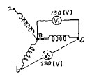
- 약 145.5
- 약 150.4
- 약 127.2
- 약 79.9
(정답률: 18%)
62. 그림과 같은 정K형 필터가 있다. 이 필터는?
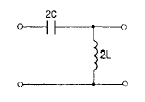
- 고역필터
- 저역필터
- 대역필터
- 대역소거필터
(정답률: 30%)
63.
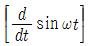
의 라플라스 값은?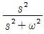
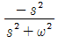
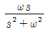
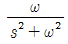
(정답률: 32%)
64. 부동작 시간(dead time) 요소의 전달 함수는?
- Ks
- K / S
- Ke-LS
- KeLS
(정답률: 62%)
65. 그림과 같은 회로에서 R2양단의 전압 E2[V]는?
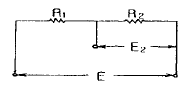
(정답률: 47%)
66. R=50[Ω], L=200[mH]의 직렬 회로에 주파수 f=50[Hz]의 교류에 대한 역률 [%]은?
- 82.3
- 72.3
- 62.3
- 52.3
(정답률: 59%)
67. R-L 직렬회로에 ｉ = I3 sin3ωt 인 전류를 흘리는데 필요한 단자 전압 e[V]는?
- (R sin ωt + ωL cos ωt) I1 + (R sin 3ωt + 3ωL cos 3 ωt) I3
- (R sin ωt + ωL cos 3ωt) I1 + (R sin 3ωt + 3ωL cos ωt) I3
- (R sin 3ωt + ωL cos ωt) I1 + (R sin ωt + 3ωL cos 3 ωt) I3
- (R sin 3ωt + ωL cos 3ωt) I1 + (R sin ωt + 3ωL cos ωt) I3
(정답률: 38%)
68. 대칭분전압을 , , 대칭분 전류를 I0, I1, I2라 할 때 대칭분으로 표시된 전 전력은?
- 3E0I1+3E1I2+3E2I0
- E0I0+E1I1+E2I1
- E0I1+E1I2+E2I0
(정답률: 34%)
69. 대칭 n 상 성상 결선에서 선간전압의 크기는 성상전압의 몇 배인가?
(정답률: 58%)
70. 그림과 같은 역 L 형 회로에서 임피던스 파라미터 중 Z22는?
- Z2
- -Z2
- Z1-Z2
- Z1+Z2
(정답률: 51%)
71. 그림과 같은 브리지 회로가 평형되기 위한 Z4의 값은?
- 2 + j4
- -2 + j4
- 4 + j2
- 4 - j2
(정답률: 57%)
72. R-C 회로의 입력단자에 계단전압을 인가하면 출력전압은?(오류 신고가 접수된 문제입니다. 반드시 정답과 해설을 확인하시기 바랍니다.)
- 0부터 지수적으로 증가한다.
- 각 고조파의 실효값의 합
- 각 고조파의 실효값의 합의 제고근
- 각 파의 실효값의 제곱의 합의 제곱근
(정답률: 17%)
73. 비정현파의 실효값은?
- 최대파의 실효값
- 각 고조파의 실효값의 합
- 각 고조파의 실효값의 합의 제곱근
- 각 파의 실효값의 제곱에 합의 제곱근
(정답률: 40%)
74. 힘 f(t)에 의해서 움직이는 질량 M인 물체의 좌표를 y(t)라 할 때 가한 힘에 대한 전달함수는?
- MS
- MS2
- 1/MS
- 1/MS2
(정답률: 28%)
75. 반지름 30[cm]인 원판 전극의 간격이 0.2[cm]인 평행판 콘덴서의 정전용량 [㎌]은? (단, 유전체의 비유전율은 8.0이다.)
- 0.04
- 0.01
- 0.02
- 0.03
(정답률: 34%)
76. L 및 C를 직렬로 접속한 임피던스가 있다. 지금 그림과 같이 L 및 C 의 각각에 동일한 무유도 저항 R를 병렬로 접속하여 이 합성회로가 주파수에 무관계하게 되는 R의 값은?
- R2=L/C
- R2=C/L
- R2=CL
- R2=1/LC
(정답률: 47%)
77. RLC 직렬 회로에서 L=5×10-3[H], R=100[Ω], C=2×10-6[F]일 때, 이 회로는 어떻게 되는가?
- 진동적이다.
- 임계진동이다.
- 비진동이다.
- 정현파로 진동이다.
(정답률: 41%)
78. 어떤 회로에 전압 e(t)=Em cos(ωt+θ)[V]를 가했더니 전류 ｉ(t)=Im cos(ωt+θ+ø)[A]가 흘렀다. 이 때에 회로에 유입하는 평균전력 [W]는?
- EmImsinø
(정답률: 39%)
79. 그림과 같은 파의 Laplace 변환식은?
(정답률: 47%)
80. 그림과 같은 회로에서 각 계기들의 지시값은 다음과 같다 Ⓥ는 240[V], Ⓐ는 5[A], Ⓦ는 720[W]이다. 이때 인덕턴스 L[H]는 얼마인가? (단, 전원주파수는 60[Hz]라 한다.)
- 1/π
- 1/2π
- 1/3π
- 1/4π
(정답률: 55%)
5과목: 전기설비기술기준 및 판단 기준
81. 전선로의 종류에 속하지 않는 것은?
- 옥측 전선로
- 터널내 전선로
- 산간 전선로
- 수상 전선로
(정답률: 43%)
82. 옥내에 시설하는 고압용 이동전선으로 사용 가능한 것은?
- 2.6[mm] 연동선
- 비닐 캡타이어 케이블
- 고압용 제3종 클로로프렌 캡타이어 케이블
- 600볼트 고무절연전선
(정답률: 46%)
83. 고압 가공케이블을 설치하기 위한 조가용선은 단면적 몇 [mm2]인 아연도 철연선 또는 이와 동등이상의 세기 및 굵기의 연선을 사용하여야 하는가?
- 8
- 14
- 22
- 30
(정답률: 58%)
84. 지중전선로에 사용하는 지중함의 시설기준이 아닌것은?
- 견고하고 차량 기타 중량물의 압력에 견딜 수 있을 것.
- 그 안에 고인물을 제거할 수 있는 구조일 것.
- 뚜껑은 시설자 이외의 자가 쉽게 열수 없도록 할 것.
- 조명 및 세척이 가능한 장치를 하도록 할 것.
(정답률: 65%)
85. 가반형의 용접전극을 사용하는 아크용접장치의 시설에 대한 설명으로 옳은 것은?
- 용접변압기의 1차측 전로의 대지전압은 600[V]이하일 것.
- 용접변압기의 1차측 전로에는 리액터를 시설할 것.
- 용접변압기는 절연변압기일 것.
- 피용접재 또는 이와 전기적으로 접속되는 받침대, 정반 등의 금속체에는 제2종접지공사를 할 것.
(정답률: 39%)
86. 고압 가공인입선의 높이는 그 아래에 위험표시를 하였을 경우에 지표상 높이를 몇 [m]까지로 감할 수 있는가?
- 2.5
- 3
- 3.5
- 4
(정답률: 42%)
87. 특별고압 가공전선로의 지지물에 시설하는 통신선 또는 이에 직접 접속하는 통신선이 도로 횡단보도교, 철도, 궤도 또는 삭도와 교차하는 경우에는 통신선은 지름 몇 [mm]의 경동선이나 이와 동등이상의 세기의 것이어야 하는가?
- 4
- 4.5
- 5
- 5.5
(정답률: 35%)
88. 가공전선로에서 지선의 시설기준으로 틀린 것은?
- 허용인장하중이 300[kg] 이상일 것.
- 3조 이상의 소선을 꼬아 합친 것일 것.
- 소손의 지름은 2.6[mm]이상일 것.
- 지선의 안전율은 2.5이상일 것.
(정답률: 46%)
89. 변압기의 고압측 전로의 1선 지락전류가 4[A]일 때, 일반적인 경우의 제2종 접지저항값은 몇 [Ω]이하로 유지되어야 하는가?
- 18.75
- 22.5
- 37.5
- 52.5
(정답률: 45%)
90. 터널내에 3300[V] 전선로를 케이블 공사로 시행하려고 한다. 케이블을 조영재의 옆면 또는 아래면에 따라 붙일 경우에는 케이블의 지지점간의 거리를 몇 [m]이하로 하여야 하는가?
- 1
- 1.5
- 2
- 5
(정답률: 33%)
91. “지중전선로는 기설 지중 약전류 전선로에 대하여 (가) 또는 (나)에 대하여 통신상의 장해를 주지 않도록 기설 약전류 전선로로부터 충분히 이격시키거나 적당한 방법으로 시설하여야 한다.” (가),(나) 에 알맞은 말은?
- (가) 정전용량, (나) 표피작용
- (가) 정전용량, (나) 유도작용
- (가) 누설전류, (나) 표피작용
- (가) 누설전류, (나) 유도작용
(정답률: 48%)
92. 고압 또는 특별고압전로 중 기계기구 및 전선을 보호하기 위하여 필요한 곳에는 무엇을 설치하여야 하는 가?
- 구분개폐기
- 단로기
- 계전기
- 과전류차단기
(정답률: 44%)
93. 폭연성 분진 또는 화약류의 분발이 전기설비가 발화원이되어 폭발할 우려가 있는 곳에 시설하는 저압 옥내 전기 설비의 배선공사를 할 수 있는 것은?
- 애자사용공사
- 캡타이어케이블공사
- 합성수지관공사
- 금속관공사
(정답률: 57%)
94. 플로어덕트공사에 사용되는 금속제 박스는 강판을 몇 [mm] 이상 되는 것으로 사용하여야 하는가?
- 1.0
- 1.2
- 2.0
- 2.5
(정답률: 29%)
95. 일반 주택의 저압 옥내배선을 점검하였더니 다음과 같이 시공되어 있었다. 잘못 시공된 것은?
- 욕실의 전등으로 방습 형광등이 시설되어 있다.
- 단상 3선식 인입개폐기의 중성선에 동판이 접속되어 있었다.
- 합성수지관공사의 관의 지지점간의 거리가 2[m]로 되어 있었다.
- 금속관공사로 시공하였고 IV전선을 사용하였다.
(정답률: 38%)
96. 발전소, 변전소 등에 시설하는 가스압축기에 접속하여 사용하는 가스 절연기기는 1[kg/cm2]를 넘는 절연가스의 압력을 받는 부분으로 외기에 접하는 부분은 최고 사용 압력의 몇 배의 수압을 연속하여 10분간 가하였을 때에 이에 견디고 새지 아니하여야 하는가?
- 1.1
- 1.3
- 1.5
- 2
(정답률: 37%)
97. 특별고압 가공전선로의 지지물 양측의 경간의 차가 큰 곳에 사용되는 철탑은?
- 내장형철탑
- 인류형철탑
- 각도형철탑
- 보강형철탑
(정답률: 64%)
98. 타냉식의 특별고압용 변압기에는 냉각장치에 고장이 생긴 경우를 대비하여 어떤 장치를 하여야 하는가?
- 경보장치
- 속도조정장치
- 온도시험장치
- 냉매흐름장치
(정답률: 70%)
99. 특별고압을 직접 저압으로 변성하는 변압기를 시설할 수 없는 용도는?
- 전기로 등 전류가 큰 전기를 소비하기 위한 변압기
- 광산에서 물을 양수하기 위한 양수기용 변압기
- 발전소, 변전소에 사용되는 소내용 변압기
- 교류식 전기철도용 신호회로에 전기를 공급하기 위한 변압기
(정답률: 47%)
100. 저압의 가공직류전차선로의 전선은 특별한 경우에 제외하고 지름 몇 [mm]의 경동선 또는 이와 동등이상의 세기 및 굵기이어야 하는가?
- 4
- 5
- 6
- 7
(정답률: 10%)